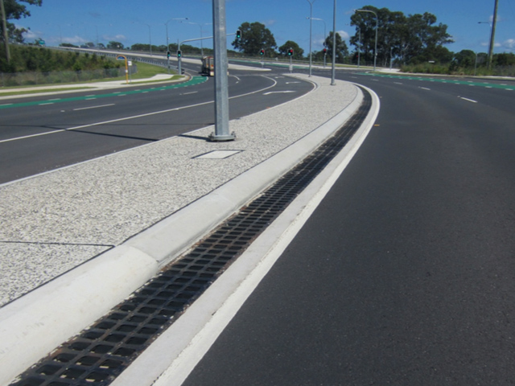

Surface Water Drainage System
The Surface Water Drainage System is a complete solution for the collection and dispersal of surface water. Typical applications include around patios, swimming pools, sports courts, and gardens, across driveways, along pathways and retaining walls, in fact, any area where surface water collects.
